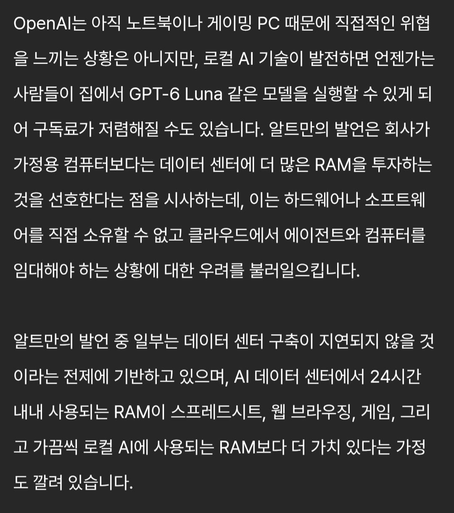

샘알트만 : 개쩌는 우리 모델 돈주면서 구독하고, 클라우드컴퓨팅을 대여하면되지 로컬ai따위를 돌리거나 게임한다고 낭비하고있다. More RAM!!!
이라고 개소리하는중
야발놈이 개인 pc는 무의미하고 접속단말정도만있으면된다고 말하는데, 무슨 현실판 아라사카 라도 만들고싶어?

샘알트만 : 개쩌는 우리 모델 돈주면서 구독하고, 클라우드컴퓨팅을 대여하면되지 로컬ai따위를 돌리거나 게임한다고 낭비하고있다. More RAM!!!
이라고 개소리하는중
야발놈이 개인 pc는 무의미하고 접속단말정도만있으면된다고 말하는데, 무슨 현실판 아라사카 라도 만들고싶어?
더비싸지기전에 반려컴 만들자 하고 램 192GB 만들어놨는데..ㅋㅋㅋㅋㅋㅋ
192G면 반려컴 ㅇㅈ
이베이에서 리퍼비시 긁어모았지만 평생가자 우리레노버..
구독료 10원이면 생각해봄
자유주의 미국에서 공리주의 공산주의만 주구장창 부르짖는새끼
서버를 늘리고 최적화 하는게 좋은거 누가 몰라!? 아잇 쉿팔
자아가 살짝 비대해졌네..
클라우드를 존나게들 비싸게 받아먹으니
그리고 점점 지들이 다 물량 가져가서 더 비싸게 쳐팔겠지
운영체제도 운영체제인데 웹도 뭔가 많이 먹는 것같음
ㅆㅂ 니가 그 얘기할까봐 이미 5년전에 64gb ecc 박아놨다
ceo란 놈들이 하나같이 분탕이나 치네
실수로 맞춘 128GB..
지극히 기업 위주의 사고방식 ㅋㅋㅋ
얘 옜날부터 선민의식 가득한 이상주의자였는데 지금은 이상주의빠지고 선민의식만 남은듯
이거참 미안하게 됐구만 알트만
지피티가 써도 된대
그래 32g는 부족하고 128g정도는 되야한다는 거지?
설레발로 어그로가 잘 안 끌리니 시비 걸기로 방향 전환한듯
대부분의 자원이 그러하듯이 분산된것보단 한곳에 집중하는게 효율이 좋은건 사실임. 그 얘기 하면서 저렇게 대화가 흘러간듯
개인pc보급덕분에 지가 ai만들수있다는 사실도 망각한건기 ㅂㅅ
ㅆㅅㄲ가 난 96기가 쓴다
이 새끼 원래 성격이 그런것도 있긴한데 기사 원문 몇개 보니까 기자 생각이 좀 많이 반영된 느낌도 있네
아가리해 똥게이새끼야 ㅡㅡ
좆같은 호모새끼
시발 64기가로 맞춰놓을걸
클로드한테 따잇당해서 허구언날 무료초기화권이나 뿌리믄 허벌창년이 ㅋㅋ
선넘네 이새키가
겜알못새끼 크롬 탭도 10개넘게 띄워본적 한번도 없겠지?
그레사 48기가 씀..
8기가 2개 샀다가 혹시나 램 수율 뽑기 실패하면 재배송 딜레이 때문에
8기가 4개로 32기로 맞췄는데 신의 한수 ㄹㅇ
여자친구가 어도비 계열 프로그램 많이 쓰고 마야도 쓰기에 램 64기가로 맞출걸이라는 아쉬움이 남음
게이새끼가
그래서 64기가 쓰고있습니다
ㅅㅂ 클라우드?ㅋㅋㅋㅋ
응~64기가 쓸거야~
현실판 아라사카 라도 만들고싶어?
-> ???: 당연한 거 아닙니까??
미친 새끼인가 진짜 ㅋㅋ 별 개소리를 다 하네